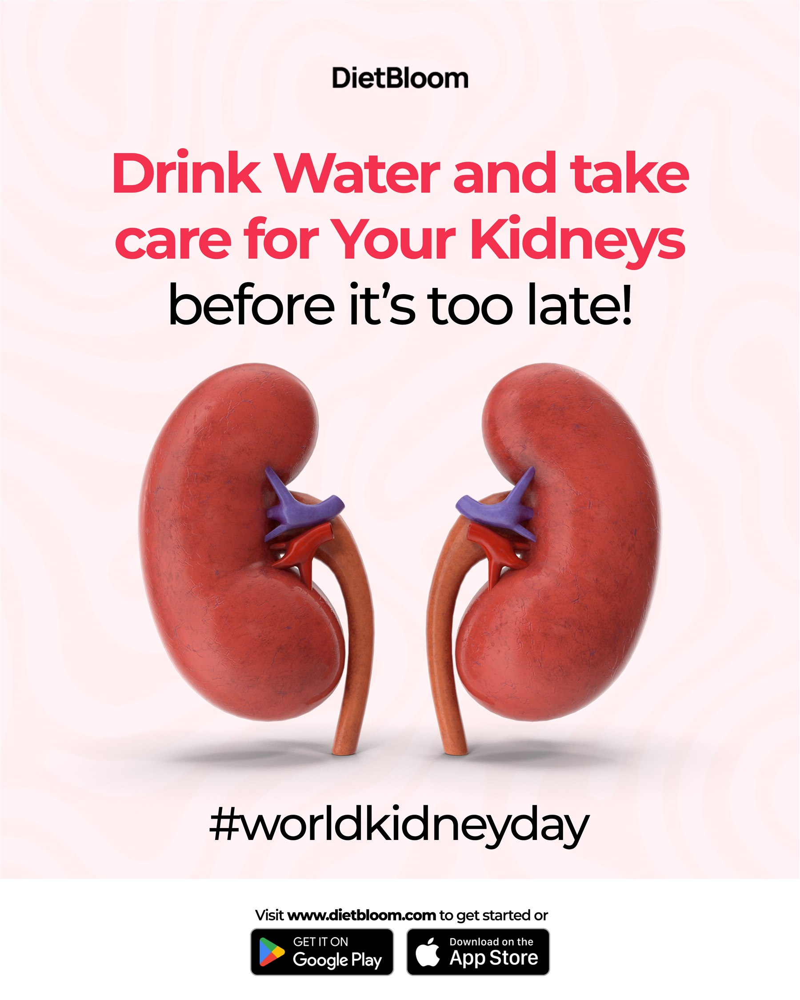
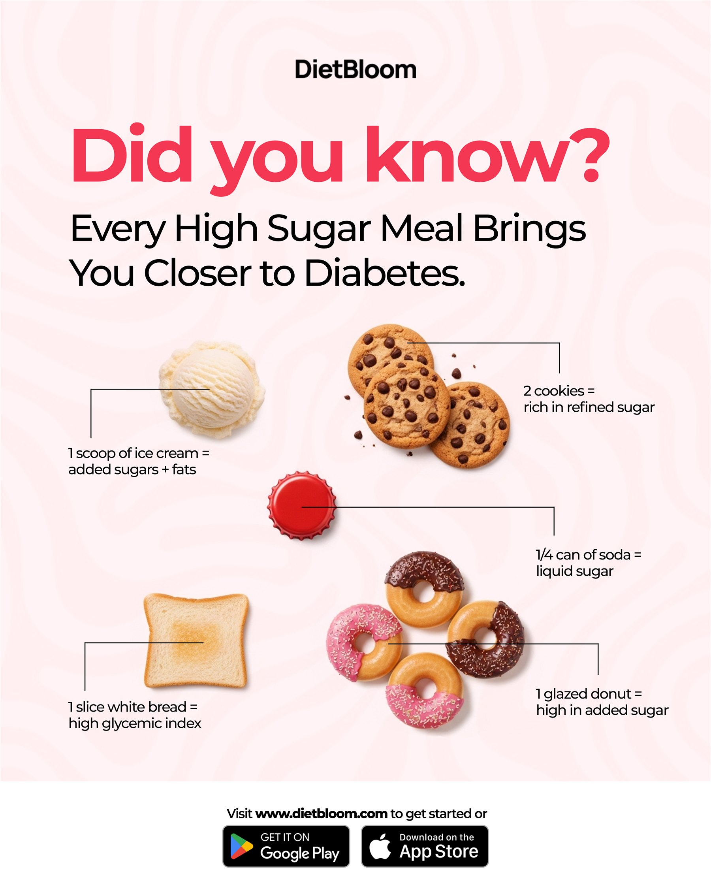
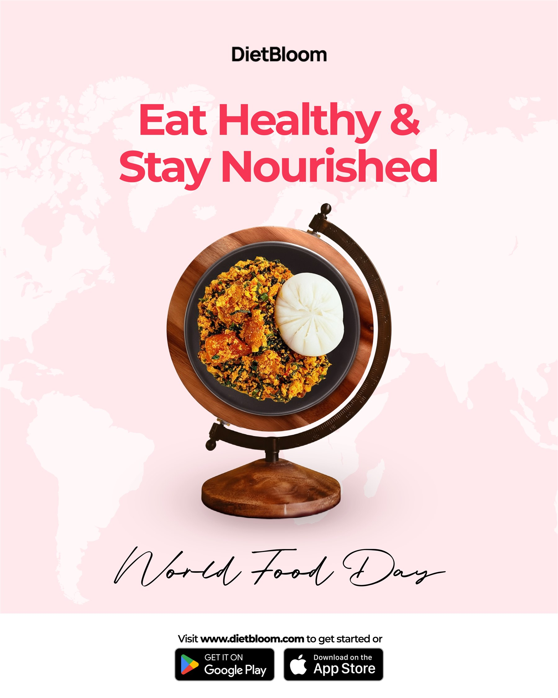
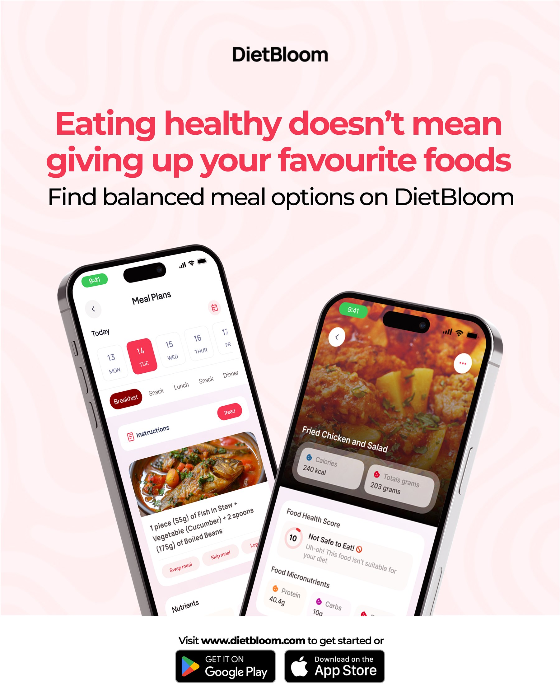
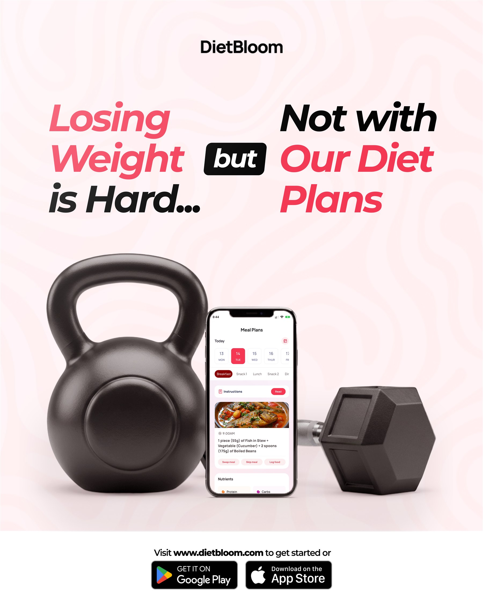
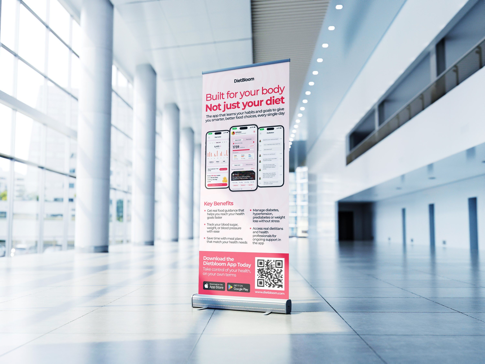
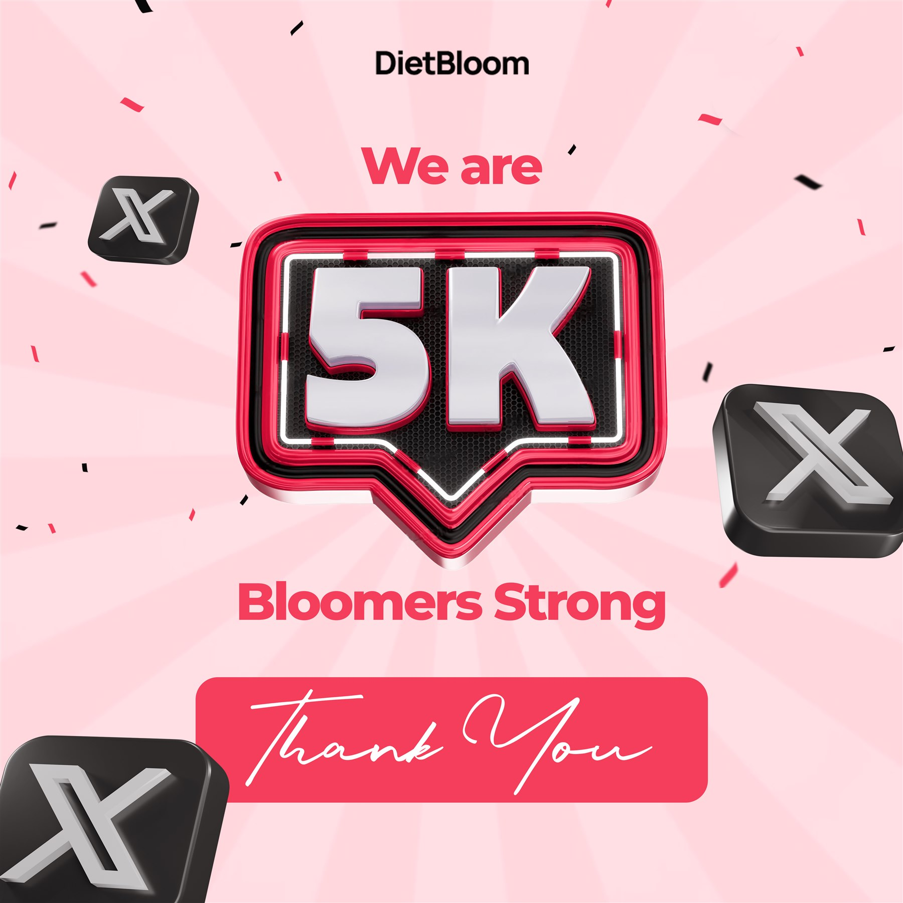
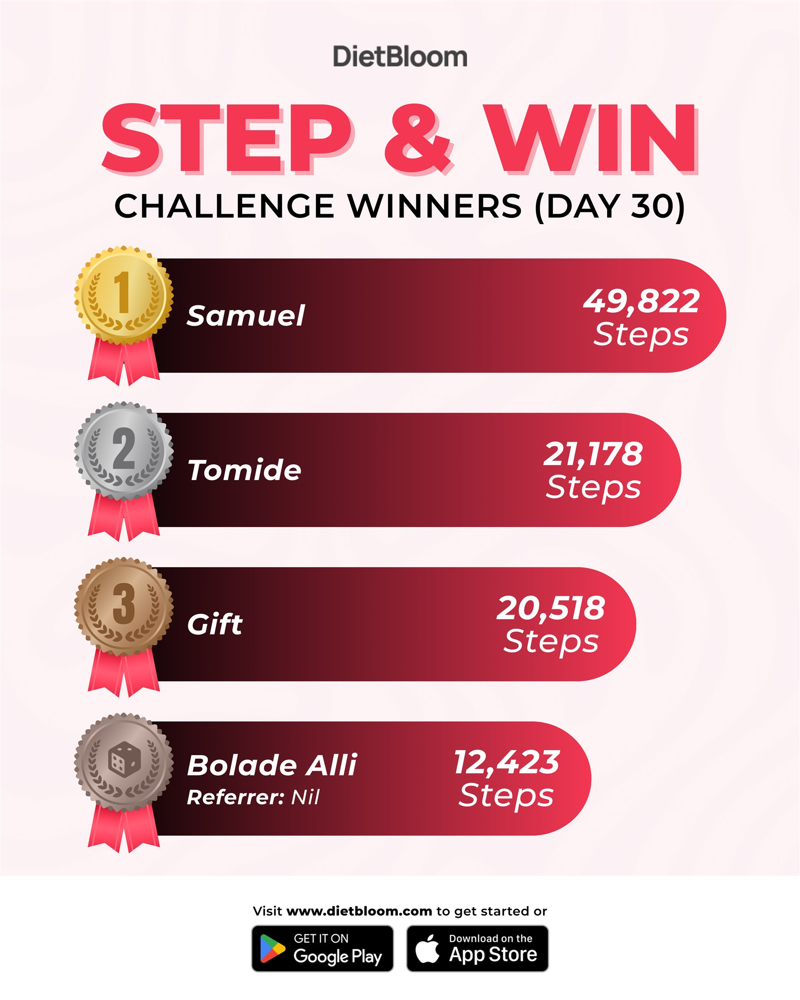

DietBloom
As DietBloom’s in-house graphic designer, I translated the platform’s mission into clear, approachable communication across health education, app marketing, community campaigns, motion and print.
- Role
- Graphic Designer
In-house
- Scope
- Brand communications
Campaign design
- Deliverables
- Digital campaigns
Motion and print
Read the case studyBack to visual view
DietBloom helps people take greater control of their health through personalised, culturally relevant diet and lifestyle guidance.
The communication task
Health information can feel clinical or overwhelming. The work needed to explain serious topics clearly while keeping DietBloom supportive, optimistic and easy to engage with.
The system
I differentiated the palette from another brand in the company’s portfolio, introduced Montserrat and standardised the visual language so campaigns could remain recognisable across formats.
The application
The system was used to educate audiences, demonstrate the product and encourage participation through health campaigns, app promotion, community content, motion and print.
The collaboration
The app interface was created by DietBloom’s UI/UX designer. My responsibility was to frame, present and market that product experience through the brand’s communication system.
A brighter colour direction and Montserrat’s direct, flexible voice gave DietBloom a consistent foundation for education, product communication and community engagement.
Clear enough
for guidance.
Bold enough
for action.
Making health information approachable.
Direct headlines, generous layouts and expressive imagery turn nutrition and preventive-health topics into content that feels clear rather than clinical.



For product marketing, the interface remains the evidence. Typography and framing organise the features around a simple benefit: personalised guidance people can use in everyday life.



Turning guidance into participation.
Challenges and milestones gave the brand a more celebratory voice, encouraging people to act on the guidance rather than only consume it.


Across education, product marketing and community content, the work gave DietBloom one clear visual voice for helping people make more informed health choices.